4. Diagnóstico de residuos#
Analizamos los residuos resid = y_real − y_pred del primer paso del horizonte (h = 1). Aplicamos el test BDS (Broock et al., 1996), cuya hipótesis nula es que los residuos son independientes e idénticamente distribuidos: un p-valor mayor que 0.05 no rechaza esa hipótesis y es la señal deseada. Lo calculamos sobre validación (por fold y estrategia) y sobre el hold-out del modelo final, y lo complementamos con Ljung-Box y la ACF de los residuos.
# Rutas: en Colab se usa la carpeta de Drive; en el repositorio, la raíz del proyecto.
import os, glob, json, warnings
from pathlib import Path
import numpy as np, pandas as pd
import matplotlib.pyplot as plt
warnings.filterwarnings("ignore")
DRIVE = Path("/content/drive/MyDrive/tarea2_series")
if DRIVE.exists():
BASE, FIGS = DRIVE, DRIVE / "figs"
else:
BASE = Path.cwd().parent if Path.cwd().name == "notebooks" else Path.cwd()
FIGS = BASE / "notebooks" / "figs"
RESULTS = BASE / os.environ.get("T2_RESULTS_DIR", "results")
FIGS.mkdir(parents=True, exist_ok=True)
LAGS, HS, ESTRATEGIAS = [7, 14, 21, 28], [7, 14, 21, 28], ["gk", "fc", "kf"]
NOMBRE = {"gk": "Group K-Fold", "fc": "Forward Chaining", "kf": "K-Fold"}
COL = ["#2a78d6", "#eb6834", "#1baf7a", "#eda100"] # orden categorico fijo
COL_EST = dict(zip(ESTRATEGIAS, COL))
COL_LAG = dict(zip(LAGS, COL))
plt.rcParams.update({"figure.dpi": 110, "axes.spines.top": False, "axes.spines.right": False,
"axes.grid": True, "grid.alpha": 0.25, "grid.linewidth": 0.6,
"axes.prop_cycle": plt.cycler(color=COL), "lines.linewidth": 1.6,
"legend.frameon": False, "axes.titlesize": 11, "axes.labelsize": 10})
df = pd.read_csv(BASE / "data" / "btc_1d.csv", parse_dates=["date"])
y = df["close"].to_numpy(float)
DATES = df["date"].to_numpy()
N_HOLD = max(int(len(y) * 0.10), 56)
N_CV = len(y) - N_HOLD
def guardar(fig, nombre):
fig.savefig(FIGS / f"{nombre}.png", bbox_inches="tight", dpi=150)
def cargar_registros():
R = {}
for f in sorted(glob.glob(str(RESULTS / "raw" / "*.jsonl"))):
for line in open(f):
if line.strip():
r = json.loads(line); R[r["id"]] = r
return list(R.values())
REG = cargar_registros()
print(f"{len(REG)} registros en {RESULTS / 'raw'}")
print(pd.Series([r["phase"] for r in REG]).value_counts().to_string())
7435 registros en /content/drive/MyDrive/tarea2_series/results/raw
search 7211
top5 80
eval_rep 48
detail 48
eval_own 32
final_rep 16
4.1 BDS sobre validación#
DET = {(r["L"], r["H"], r["strat"]): r for r in REG if r["phase"] == "detail"}
filas = []
for (L, H, s), d in DET.items():
p = [f["bds_p_h1"] for f in d["folds"] if f["bds_p_h1"] is not None]
filas.append(dict(estrategia=NOMBRE[s], lag=L, H=H, folds_con_bds=len(p),
bds_p_medio=np.mean(p) if p else np.nan,
folds_p_mayor_005=int(np.sum(np.array(p) > 0.05)) if p else 0))
BDSV = pd.DataFrame(filas).sort_values(["estrategia", "lag", "H"])
BDSV.to_csv(RESULTS / "bds_validacion.csv", index=False)
BDSV[BDSV.estrategia == "Group K-Fold"].pivot(index="lag", columns="H", values="bds_p_medio").round(3)
| H | 7 | 14 | 21 | 28 |
|---|---|---|---|---|
| lag | ||||
| 7 | 0.075 | 0.119 | 0.030 | 0.091 |
| 14 | 0.053 | 0.000 | 0.000 | 0.116 |
| 21 | 0.113 | 0.032 | 0.064 | 0.096 |
| 28 | 0.127 | 0.241 | 0.214 | 0.314 |
Forward Chaining y K-Fold validan sobre una ventana por fold: un solo residuo h = 1 por fold no permite aplicar BDS, por eso esas filas aparecen vacías.
La tabla resume cada configuración con el promedio de los p-valores de sus cinco folds. Ese promedio es un resumen descriptivo, no un test. Con ese criterio, 12 de las 16 configuraciones quedan por encima de 0.05 y cuatro por debajo (lag 7 con H 21, lag 14 con H 14 y H 21, lag 21 con H 14). El lag 28 tiene los p-valores más altos (0.13 a 0.31).
Hay una advertencia importante sobre esta lectura. En Group K-Fold los residuos de validación de un fold no forman una serie consecutiva: son bloques separados por los bloques de entrenamiento intercalados. El test BDS supone una secuencia temporal continua, y concatenar bloques separados debilita la dependencia que el test busca. Por eso un p-valor alto aquí no es evidencia fuerte de residuos independientes. La prueba más exigente es la del hold-out, donde los residuos sí son consecutivos.
4.2 BDS y Ljung-Box sobre el hold-out del modelo final#
from statsmodels.tsa.stattools import bds
from statsmodels.stats.diagnostic import acorr_ljungbox
filas, RESID = [], {}
for L in LAGS:
for H in HS:
f = RESULTS / "models" / f"own_L{L}_H{H}_preds.npz"
if not f.exists():
continue
z = np.load(f); e = z["real"][:, 0] - z["pred"][:, 0]; RESID[(L, H)] = e
p_bds = float(np.atleast_1d(bds(e, max_dim=2)[1])[0])
p_lb = float(acorr_ljungbox(e, lags=[10], return_df=True)["lb_pvalue"].iloc[0])
filas.append(dict(lag=L, H=H, n=len(e), media_resid=e.mean(), std_resid=e.std(),
BDS_pvalue_h1=p_bds, LjungBox10_pvalue=p_lb))
BDSH = pd.DataFrame(filas)
BDSH.to_csv(RESULTS / "bds_holdout.csv", index=False)
BDSH.round(4)
| lag | H | n | media_resid | std_resid | BDS_pvalue_h1 | LjungBox10_pvalue | |
|---|---|---|---|---|---|---|---|
| 0 | 7 | 7 | 286 | -2604.1745 | 2900.7556 | 0.0 | 0.0 |
| 1 | 7 | 14 | 279 | -4772.4534 | 3650.7196 | 0.0 | 0.0 |
| 2 | 7 | 21 | 272 | -8173.7290 | 3750.4509 | 0.0 | 0.0 |
| 3 | 7 | 28 | 265 | -25713.5138 | 3921.5828 | 0.0 | 0.0 |
| 4 | 14 | 7 | 286 | 1606.1239 | 3264.1563 | 0.0 | 0.0 |
| 5 | 14 | 14 | 279 | -750.8793 | 4075.8033 | 0.0 | 0.0 |
| 6 | 14 | 21 | 272 | 19734.8692 | 6804.0397 | 0.0 | 0.0 |
| 7 | 14 | 28 | 265 | -24742.9274 | 3964.5391 | 0.0 | 0.0 |
| 8 | 21 | 7 | 286 | 9544.6574 | 4128.9303 | 0.0 | 0.0 |
| 9 | 21 | 14 | 279 | 2870.0038 | 4065.6676 | 0.0 | 0.0 |
| 10 | 21 | 21 | 272 | -21181.4310 | 3492.2302 | 0.0 | 0.0 |
| 11 | 21 | 28 | 265 | -23773.8722 | 3844.7990 | 0.0 | 0.0 |
| 12 | 28 | 7 | 286 | 3445.3394 | 4100.4586 | 0.0 | 0.0 |
| 13 | 28 | 14 | 279 | -917.6153 | 3734.6275 | 0.0 | 0.0 |
| 14 | 28 | 21 | 272 | -5771.0753 | 3172.7828 | 0.0 | 0.0 |
| 15 | 28 | 28 | 265 | -8343.7869 | 3134.3397 | 0.0 | 0.0 |
En el hold-out el resultado es claro: BDS y Ljung-Box (10 rezagos) rechazan la independencia en las 16 configuraciones, con p-valores que redondean a 0.000. Los residuos del modelo final no son ruido blanco.
La columna media_resid explica gran parte del rechazo. El residuo medio de h = 1 va de −25 714 USD (lag 7, H 28) a +19 735 USD (lag 14, H 21), cuando la desviación estándar de los residuos ronda 3000 a 4000 USD. Como el residuo es real − predicho, un valor negativo indica que el modelo sobreestima el precio de forma sistemática y uno positivo que lo subestima. En 10 de las 16 configuraciones el valor absoluto del sesgo supera a la desviación estándar. Un residuo con un sesgo persistente que cambia lentamente en el tiempo está autocorrelacionado por construcción, y eso basta para que ambos tests rechacen. Como Ljung-Box, que solo detecta dependencia lineal, ya rechaza, el rechazo de BDS no permite concluir que exista dependencia no lineal adicional.
4.3 Residuos del hold-out (lag 14, H 14)#
from statsmodels.graphics.tsaplots import plot_acf
def figura_residuos(L, H):
e = RESID[(L, H)]; t = DATES[N_CV:N_CV + len(e)]
fig, ax = plt.subplots(1, 3, figsize=(15, 3.4))
ax[0].plot(t, e, color=COL[0], lw=1); ax[0].axhline(0, color="0.4", lw=0.8)
ax[0].set_title(f"Residuo h = 1 en el hold-out (lag {L}, H {H})"); ax[0].set_ylabel("USD")
ax[1].hist(e, bins=40, color=COL[0], alpha=0.8); ax[1].set_title("Distribución")
plot_acf(e, lags=30, ax=ax[2], title="ACF del residuo")
fig.tight_layout(); guardar(fig, f"residuos_holdout_L{L}_H{H}"); plt.show()
if (14, 14) in RESID:
figura_residuos(14, 14)
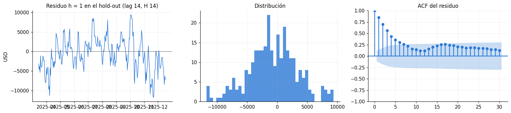
En lag 14 con H 14 el sesgo medio es pequeño (−751 USD), pero el residuo oscila entre −11 000 y +9 000 USD con episodios largos del mismo signo: varias semanas por encima de cero seguidas de varias por debajo. La ACF lo confirma: la autocorrelación del residuo es 0.85 en el rezago 1 y decae despacio, quedando fuera de la banda de confianza hasta cerca del rezago 7 (lectura de la figura). Es el patrón de un error que hereda la persistencia de la serie: cuando el precio se aleja del nivel que la red predice, el error se mantiene durante días. Esto es coherente con lo observado en el notebook 3: la red no reproduce la persistencia del último precio con la exactitud del pronóstico ingenuo.
for (L, H) in sorted(RESID):
if (L, H) != (14, 14):
figura_residuos(L, H)
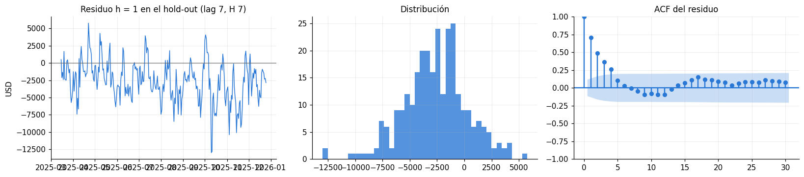
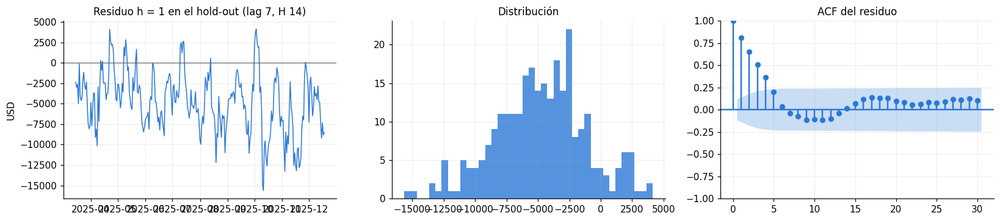
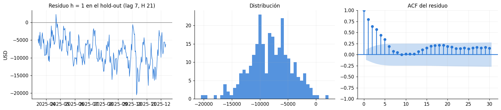
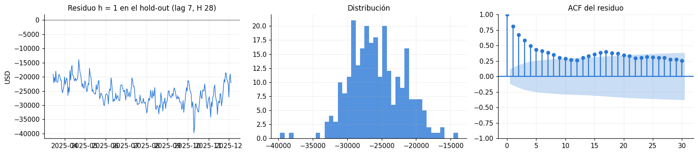
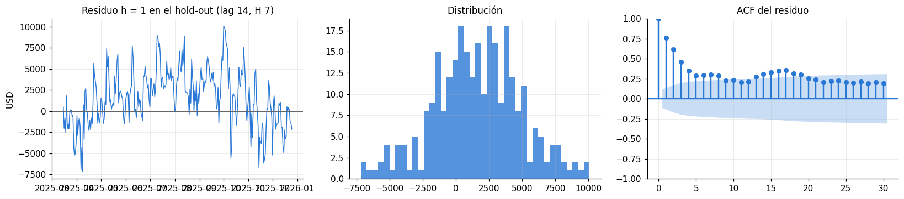
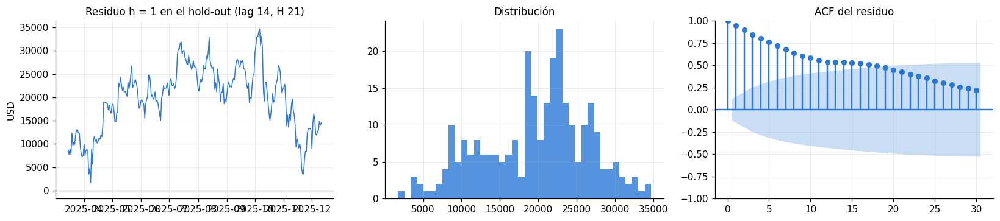
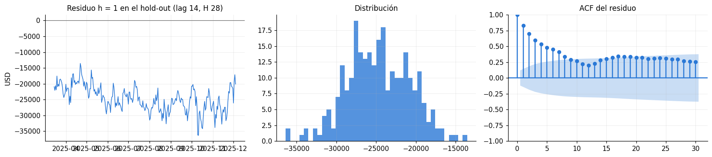
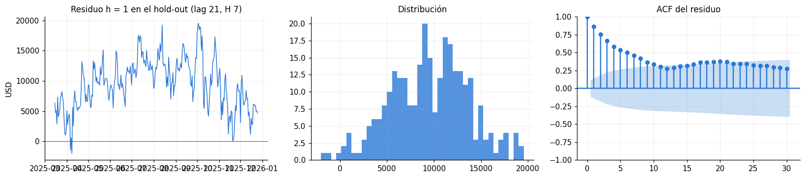
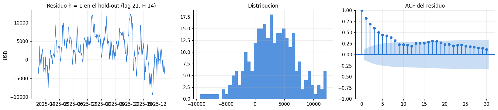
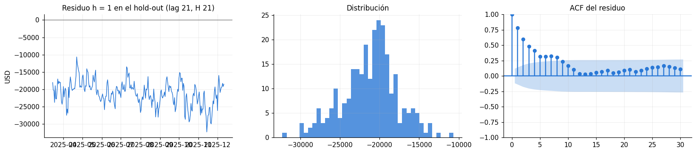
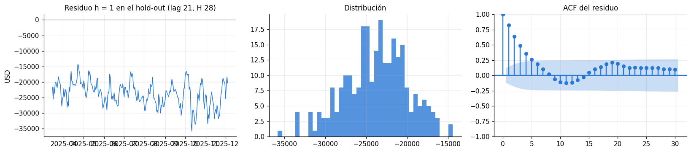
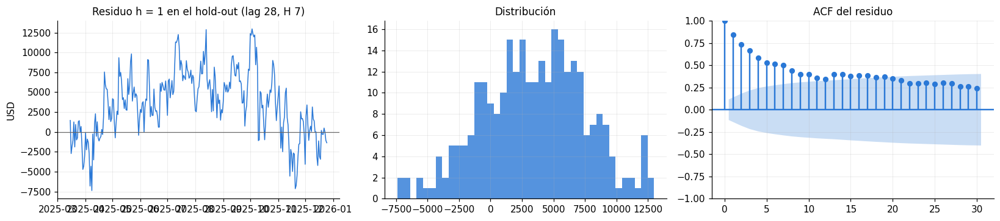
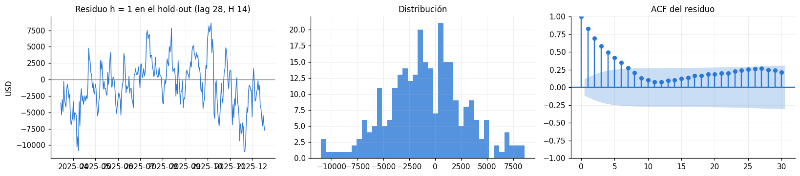
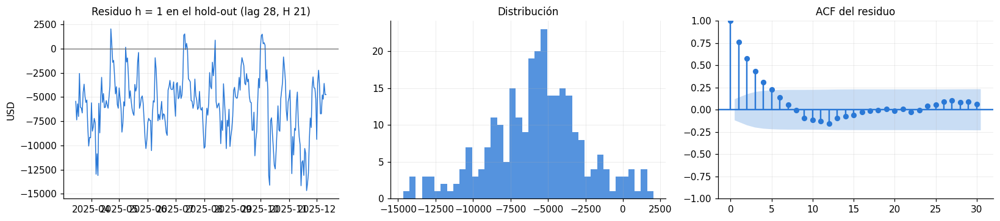
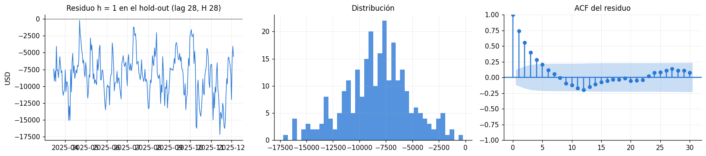
Las demás configuraciones repiten el diagnóstico con las cifras de la sección 4.2: Ljung-Box rechaza en todas y la media del residuo es distinta de cero en todas. En lag 28 con H 28, por ejemplo, el residuo queda por debajo de cero durante todo el hold-out (entre unos −17 500 y 0 USD), es decir, el modelo sobreestima el precio todos los días, y la ACF es 0.74 en el rezago 1 (lectura de la figura). En las cinco configuraciones con sesgo superior a 19 000 USD en valor absoluto (lag 7 con H 28, lag 14 con H 21 y H 28, lag 21 con H 21 y H 28) el desplazamiento domina por completo el error.
4.4 Síntesis#
En validación con Group K-Fold el promedio de p-valores BDS supera 0.05 en 12 de 16 configuraciones, pero la discontinuidad de los bloques de validación hace que esta prueba sea poco exigente.
En el hold-out, BDS y Ljung-Box rechazan la independencia en las 16 configuraciones. La causa principal es un sesgo sistemático del modelo final, que supera los 19 000 USD en valor absoluto en cinco configuraciones, y la fuerte autocorrelación del residuo.
La implicación para el modelado es concreta: el modelo debería predecir el cambio respecto al último precio (retornos) en vez del nivel, o incorporar una conexión directa con el último valor observado, de modo que la persistencia sea el punto de partida y la red solo aprenda la corrección.